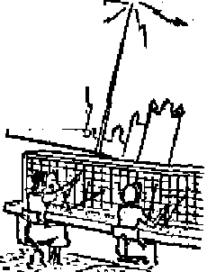

Watchmen guard the original parchment while courts c estroy all it stands for
Powerful lenses that stalk the invisible to answer ”What lies beyond I”
Flag origin linked to religious veneration
THE MISSION OF THIS JOURNAL
News sources that are able to keep you awake to the vital iesueA of our tlmetf must be unfettered by censorship and selfish Interests. “Awakef* has no fetters. It recognizes facts, faces facts, is free to publish facts. It is not bound by political ambitions orobligattona; It Is unhampered by advertisers whose toes must not be trodden on; it Is unprejudiced by traditional creeds. This journal keeps itself free that it may speak freely to you. But it does not abuse its freedom. It maintains integrity to truth.
“Awake I” uses the regular news channels, but is not dependent on them. Its own correspondents are on all continents, in scores of nations. From the four corners of the earth their uncensored, on-the - scenes reports come io you through these columns. This journal’s viewpoint is not narrow, but is international. It is read in many nations, in many languages, by persons of all ages. Through its pages many fields of knowledge pass in review—government, commerce, religion, history, geography, science, social conditions, natural wonders—why, its cover* age is as broad as the earth and as high as the heavens.
“Awake I” pledges itself to righteous principles, to exposing hidden foes and subtle dangers, io championing freedom for all, to comforting mourners and strengthening those disheartened by the failures of a delinquent world, reflecting sure hope for the establishment of a righteous New World.
Get acquainted with “Awake!*’ Keep awake by reading “Awake!”
Published Semimonthly By watchtower BIBLE AND TRACT SOCIETY, INC.
117 Adams Street
N. H. Knohb, Preridertl
Printing this issue: 375,000
Lshiuvu Im which tth nia&rkia h giUlthiM: SMniinnnihJ^Afrlkutif. Ecsllsb, Finnish, Germin, Nwwtfitn, BpwtBb- Monthly—Danlsih, French, Greek, ForUftnae, SwMlteh, Ukrainian.
Offices Yearly ■dMeriptimi Bite
Amtrita. U.S.. 117 Adum SL, Brooklyn 1, N T. *1 Airtnlla, 11 Bwesfmd M.. Strt thfield, N-B.W. 8s CmuIa, 40 Irwin Ave., Toronto 5, Ontorio (1 Engtanf, 34 Craven Terrue, Londwi, W. 2 Is SHtk Afriee, 623 Breton Howe, Cepe Town 7a
tiatend fri BM»nd-oJasK witter *t Brooklyn, N. Y.
Brooklyn 1, N. Y., U. S, A.
Ghani SfriTEa, Storetartf
Five cents a copy
HMOlttutH should be sent to office in your cnim-try in compliance with regulations to guarantee saje delivery of money. JtewiltBnws are Accepted at Brooklyn from countries where no office located, by international money order only. Subscription rates tn different countries are here silted in local currency. Motta of (Miration (with renewal blank) Is oenl at least two Issues before Subscription ex -pires. CbMpt of address when «nt to cur tdfict may be expected effecHte within une month. Beni your old a* well as new addreas.
Act rf Mareh 3, 1STP. Printed In U. B A
CONTENTS
United States Constitution—a Fading
Brush Off Bill of Rights’ Petitions
To Another World—by Microscope
One Picture Worth 10,000 Words?
Truth Makes Free in Barotscland
Religious Antics Steal the Show
"Your Word Is Truth”
Court-Martial Discharges One of
Volume XXXIII Brooklyn, N, ¥„ May 22, 1952 Number W
BIBLE TRUTH—FROM GOD OR MAN?
CATHOLIC dignitaries, like the priest in Toledo, Ohio, quoted in the Toledo Blade on March 1,1943, are fond of saying: “The Catholic Church made the Bible; she has preserved it; and she interprets it.. . . The Catholic Church was able to do this only because of the aid of the Holy Ghost, of the Holy Ghost actively fulfilling the promise of infallibility that our Lord made to his church.”
Similar pious lip service is paid to the Book of books through functions like the Catholic-sponsored “Bible Week” in midFebruary this year. Yet the fact remains that many devout Catholics do not possess copies of the Bible, and those that do get little assistance in its study. However, they are generously supplied with reading matter by the prolific Catholic press in the form of newspapers, periodicals, etc.
An example is the widely read paper Out Sunday Visitor, which made the following statement in its issue of February 3, 1952: “Speaking about the creation of man, the Bible tells us that God formed Adam’s body 'out of the slime of the earth, and breathed into it an immortal soul*” [Italics ours] With Catholic claims in mind the Bible student asks in alarm, ‘What Bible have they preserved?* In the paper’s original text it pretended to quote directly from the Bible by setting off the quoted portion in double quotation marks (indicated in our reproduction by single marks).
The words the paper would like its readers to think appear in the Bible the way they have quoted them are found in part at Genesis 2:7,. But note how the following approved Catholic translations of the Bible render this text.
We find the Douay Version to read: “And the Lord God formed man of the slime of the earth, and breathed into his face the breath of life; and man became a living soul” Msgr. Ronald Knox’s translation reads: “The Lord God formed man, breathed into his nostrils the breath of life, and made man a living soul” Says the translation of Genesis produced by the Catholic Confraternity of Christian Doctrine: “Then the Lord God . . . breathed into his nostrils the breath of life, and man became a living being” [Italics ours]
Examine, too, these further texts dealing with the human soul:
At Isaias 53:12, the Douay Version reports: “He hath delivered his soul unto death and was reputed with the wicked.” Msgr. Knox gives Ecclesiastes 9:4-6 as follows: “Were but immortality the prize! But no . . . They live under sentence of death; and when death comes, of nothing will they be aware any longer; no reward can they receive, now that every trace of them has vanished away; no love, no hatred, no envy can they feel.” And at Ezekiel 18:4, Knox says: "It is the guilty soul that must die.” Then turn to the Christian
Greek Scriptures and the Catholic Confraternity’s version of Matthew 10:28: “And do not be afraid of those who kill the body but cannot kill the soul. But rather be afraid of him who is able to destroy both soul and body in hell?’ See too how this translation reads at Acts 3:23: “And it shall be that every soul that will not hearken to that prophet, shall be destroyed from among the people?’ Yet somehow, from somewhere, Our Sunday Visitor insists that God breathed an immortal soul into the first man.
How then is an immortal soul ‘delivered unto death’? By what phenomenon is a deathless soul placed “under sentence of death”, left without a reward, or unable to feel love, hate, envy, etc,? Just how can an undying soul die, be destroyed in hell or “from among the people”? Please, how can these things be?
No, you are right. Black cannot be made white, the impossible rendered possible; not even to establish unscriptural, unreasonable and ungodly false religious doctrines. By inferring such a thing the sectarian paper above quoted deliberately seeks to suppress fundamental Bible truths. Any doubt of this vanishes when further in the same article the reader finds this passage: “Adam , . . had been told that if he remained faithful, none of his posterity would die, that all people would preserve the innocence in which they were created and, after living on this earth as long as God willed it, would be taken into a heavenly Paradise, where they would share all the glory of God’s own home?’ Will the Catholic press, Catholic readers or Catholic scholars go to their Catholic Bibles and produce any promise from God to Adam to this effect? To do so will require writing in the words they desire, just as they put them into their printed article.
Are these tactics considered an exercise of the alleged “infallibility” residing in the Catholic Church? Is such wholesale editing out of Bible truths and editing in of their false pagan doctrines what they mean by 'making the Bible, preserving it, interpreting it’? Nor is this practice new to papal Rome. An integral part of Catholic worship centers around the use of images. The second of the Ten Commandments specifically says: "Thou shalt not make to thyself a graven thing, , .. Thou shalt not adore them, nor serve them?’ (Exodus 20:4,5, Douay) "Thou shalt not carve images or fashion the likehess of anything ... to bow down and worship it.” (Knofr) But though Catholics are woefully unacquainted with even their own Catholic translations of the Bible, they all have and read their catechisms. But in them they do not read the Second Commandment which has been completely eliminated and the Tenth Commandment dishonestly split in two in order to complete the regular number! See this for yourself in A Catechism of Christian Doctrine^ Revised Edition of the Baltimore Catechism, Nos. 1 and 2, copyrighted in 1941 by the Confraternity of Christian Doctrine. Mention is made of images in connection with the First Commandment, but the Scriptural prohibition is not quoted.
What do the Roman hierarchs fear, that they must censor out such vital instructions regarding pure worship? Do they realize that the Bible, freely read in Catholic hands, would topple their tottering creedal structure like a house of cards? Not preservers but perverters of the Bible have they been! Despite their egotistic claims, what a blessing it is that Bible truth was not left to the mercy of such conscienceless counterfeiters of inspired teaching. What conclusive proof that Jehovah God its author and not any human organization has preserved the Bible in its integrity and truth.
United States Constitution
A Fading Parchment
Much lip service Is offered In behalf of civil liberties. But recent developments affecting civil liberties have caused great concern to many and have given rise to these questions: Does the mind and spirit of man belong to the state Dr to the citizen? Does the state have the constitutional right to mold the thinking, choose the friends, limit the association, and dictate the private lives of its citizens? Are Its citizens free to work at the jobs they choose, free to speak their thoughts, free to print and write articles they desire, free to distribute pamphlets, free to endorse speeches made or articles written or acts performed by others? Are Its citizens free to criticize governmental policies, free to disagree with its administrative heads, free to offer suggestions and advocate new ideas and policies? This article offers an unbiased presentation of the facts regarding the
recent trend of the United
States Supreme Court and it* effect on civil liberties.
THE precious document of the United States Constitution is carefully guarded at Washington, D.C. Recently additional precaution was taken to preserve the aging document from the ravages of time. Amid, pomp and ceremony the yellowing parchment was gingerly tucked away in an airtight helium-filled case for preservation. While faithful moo stand guard to protect and preserve the fading parchment, the appointed guardians of the living Constitution—the Constitution in action—are slashing away at its liberties granted the people by the Constitution. Slowly antilibertarian attitudes are being read into the Constitution. In place of the supremacy of the individual the Supreme Court is beginning to substitute the theory of the supremacy of the legislative will. The lack of fire, spirit and faith in individual freedom, which are the hasic ingredients of any real appreciation of the Bill of Rights, has weakened the high tribunal so that it is steadily becoming a less effectual and less important bulwark against the modern onslaught on freedom.
Since the deaths of Murphy and Rutledge in the summer of 1949, a swing away from civil liberties was started in a slow and somewhat subtle manner. Eugene Gressman, in his article “The Tragedy of the Court”, says that “there is not now a majority of five or more judges who have the personal background, the judicial character or the singular devotion to the cause of human freedom that are essential to the judicial protection and growth of freedom”. (New Republic, September 3, 1951) True, strong lip service to the cause of human freedom is voiced by the court, but inevitably follows an emphasis on the equally obvious proposition that “right to speak freely is not absolute”. As Chief Justice Vinson remarked recently, “The societal value of speech must on occasion be subordinated to the values and considera-tlbns.” In other words, the court is rejecting the idea that the rights guaranteed by the First Amendment—the rights of free speech, free assembly, free worship, and free press—are entitled to a preferred place in our framework of liberty. Out of the seventeen civil rights cases the court heard, Chief Justice Vinson voted for only three, while Justice Douglas voted for fifteen of the seventeen cases and Justice Black voted for fourteen. Where the heart is there will the decisions be also.
The court’s decreased regard for the supremacy of the rights of the individual is mirrored in its summary rejection of constitutional elaims via certiorari. During the last two terms (1949-50, 1950-51) about 85 per cent of the attempts to obtain certiorari failed. There were difficult cases, such as the Stuyvesant Town case where a Negro war veteran tried to rent an apartment there and was turned down because of his color. There was the Baltimore radio case. The trial judge fined the radio station for contempt of court because of its “obstruction of the administration of justice” for broadcasting an alleged confession by the defendant. The Court of Appeals of Maryland reversed the contempt order as an unconstitutional interference with freedom of speech and of the press. The U. S. Supreme Court would not hear this case despite its far-reaching effects. There was the Georgia case authorizing local movie censorship on the grounds that motion pictures are in no way entitled to freedom of the press. And there were other twisted, tough and unsettled civil rights issues that needed clarifying, but the court ducked its duty and stifled civil liberties by denying certiorari.
In the few Bill of Rights cases that it did consider, the court’s decisions reflected a further disregard for individual liberties.
The Dennis decision in substance says to Congress, You may make and enforce a law which sends persons to jail for the mere expression of political ideas, despite the most famous Constitutional guarantee that “Congress shall make no law . . . abridging the freedom of speech”. The Supreme Court took a wallop at freedom of speech in the Feiner case, which incidentally gives the police the “green light” to break up a meeting anywhere and be perfectly within the law. The federal loyalty program got a shot in the arm when the court split evenly, 4 to 4, in the Bailey case and thus automatically affirmed the lower court’s 2-to-l decision upholding the law involved. This law says in effect, Constitutional freedoms are not for everyone. For instance, government employees must choose between freedom of expression and freedom of employment. If you choose to freely express yourself, that most likely will mean you will be job hunting, if the Loyalty Board gets after you.
The Supreme Court again showed its colors in the Feinberg case. This law, upheld by the Supreme Court, March 3,1952, simply wipes out freedom of thought and conduct and membership for teachers. This law makes schoolteachers second-class citizens, denying them the full protection of Constitutional rights and guarantees. The statute supposedly is designed to keep Communists and other subversives out of the public school system. The basic tenet of the majority opinion was that the state had a constitutional right to preserve the integrity of the schools and to protect young minds of children in its public schools from subversive propaganda, subtle or otherwise, disseminated by those “to whom they look for guidance, authority and leadership”. Justice Minton, ruling for the majority, said: “That school authorities have the right and duty to screen the officials, teachers, and employes as to their
fitness to maintain the integrity of the schools as a part of ordered society, cannot be doubted. One’s associates, past and present, as well as one’s conduct, may properly be considered in determining fitness and loyalty?’—New York Times, March 4t 1952,
Dissenters for Freedom
Dissenting Justices Douglas and Black disagree with the court majority and condemn the law as against the Constitutional guarantees of “freedom of thought and expression to everyone in our society. All are entitled to it; and no one needs it more than the teacher”, said Justice Douglas, Justice Black sided in with Douglas and said:
“The importance of this holding prompts me to add these thoughts* This is another of those rapidly multiplying legislative enactments which make it dangerous—this time for schoolteachers—to think or say anything except what a transient majority happen to approve at the moment. Basically these laws rest on the belief that government should supervise and limit the flow of ideas into the minds of men. The tendency of such governmental policy is to mold people into a common intellectual pattern, Quite a different governmental policy rests on the belief that government should leave the mind and spirit of man absolutely free,
“Because of this policy public officials cannot be constitutionally vested with powers to select the ideas people can think about, censor the public views they can express, or choose the persons or groups people can associate with. Public officials with such powers are not public servants; they are public masters,”
This law not only punishes teachers for their thoughts and their associates, but restricts them as to what they can write, what they might distribute and what they might endorse. The state commissioner of education advised the teachers in a memorandum: “The writing of articles, the distribution of pamphlets, endorsement of speeches made or articles written or acts performed by others, al] may constitute subversive activity* Nor need such activity be confined to the classroom. Treasonable or subversive acts or statements outside the school are as much a basis for dismissal as are similar activities in school or in the presence of school children*”—New York Times, July 23, 1949,
Justice Douglas said the Feinberg law “turns the school system into a spying project * , * The principals become detectives; the students, the parents, the community become informers”. The teacher for fear will repress her thoughts. On the streets, on trains, at theaters, she will look in all directions befor^ speaking* Is this not typical of what happens in a police state?
Will truth and freedom ring from the housetops or will it be hid under a bushel of fear? Will the teacher feel free to speak out against the present administration and its policies, or against its trend toward socialism, or against its policies toward an oppressive fascist regime? or will fear of being labeled “disloyal” keep her gagged? What teacher in need of a job will be free to speak out against the NATO at this critical hour, or express her opinions regarding the war in Korea, and the waste and corruption in government without being tagged as “disloyal”? American democracy and freedom of thought have come to a deplorable new low in our schools when it is necessary for the state commissioner of education to warn that suggestions about possible improvement in the American form of government should not be considered disloyal.
The builders of the Constitution knew the strength that comes from a free mind, when ideas may be pursued wherever they lead, not cramped in because of fear. “We forget these teachings of the First Amendment when we sustain this law,” said Justice Douglas. He adds: “Of course the school systems of the country need not become cells for Communist activities; and the classrooms need not become forums for propagandizing the Marxist creed. But the guilt of the teacher should turn on overt acts. So long as she is a law-abiding citizen, so long as her performance within the public school system meets professional standards, her private life, her political philosophy, her social creed should not be the cause of reprisals against her.”
The great guarantees of individual liberty are beginning to show some of the corrosive effects of the passions and fears besetting our times. Those who have relied for long on the Constitution as the “Gibraltar of freedom” should take heed to what is happening to the living principles of the Constitution. Men might preserve the document, but in the words of the American Bar Association Journal: “Unless judges of the present generation reverse the recent trend, constitutions may become nothing but fading parchments.”
WOULD PARADISE KILL THE RACE?
WOULD the flawless blessings of paradise prove as destructive as atomic war? A “yes” answer seemed to be the point of an exhibit at the American Medical Association’s 100th annual gathering In Atlantic City, New Jersey, last June. Ups and downs, a generous sprinkling of hard times and reverses, seemed beneficial in the minds of Drs, R, R* Spencer and M. B* Melroy of the National Cancer Institute in Bethesda, Maryland. Dr. Spencer related the case of a population of one-celled paramecia that was blessed with every advantage a paramecium could ask for, plenty of food, fine temperature, complete absence of enemies, etc. What happened? We read:
"In eight years, the whole population of paramecia died out. This happened to six different strains of them. But paramecia that lived under normal troubles and windfalls are going strong, maybe because changes and challenges 'keep them on their toes’, Dr. Spencer said,”
Another experiment showed that bacteria exposed first to hot then normal temperatures continued to thrive* Individuals died but the race kept going strong, ’developing the ability to live in hotter temperatures,
Applying the lesson of the bugs to humanity, Dr, Spencer added: “As individuals, we yearn for peace, stability, security. But nature seems to imply that all that may not be good for the race. The conditions that are perfect for one Individual are not perfect for the race. . . * We must expect change. It is the primary law of the universe. Nothing stays the same. Until a man is able to realize that your death and mine are just as essential for progress as is his birth, he is no| mentally mature*”
But the Bible contradicts this conclusion based on the ideas of fallen man* In the first place, there would be nothing paradisaic about a workless world* There is no basis in fact for the idea that man’s Creator ever intended such a condition for humankind. Adam was fur* hi shed with constructive work which was essential in his role as caretaker of Eden.
"Be fruitful, multiply, fill the earth, and subdue it; have dominion over the fish of the sea, the birds of the air, the domestic animals, and all the living things that crawl on the earth* * * . The Lord God took the man and put him in the garden of Eden to till it and look after it."—Genesis 1:28; 2:15, An Amer. Trans.
Neither need we fear that death and all the other attending evils draped over the race since Adam’s fall must remain forever as essential contributors to "progress”. There has been nothing progressive about man’s more than 5,900 years of degeneration since Elden. The Bible is true and Christ’s sacrifice will finally make possible death’s unconditional surrender* Death it refers to as not at all “progressive", but "the last enemy that shall be destroyed”.—! Corinthians ,15:26*
water life,. His accomplishments both paved the way for Robert Hooke’s compound microscope (having more than one simple lens) and made possible the epic research by Pasteur, Koch, Lister and others.
-■. jb 7 JP53^ _ * . t
XT
WITH the telescope man peers into limitless outer space and feels small. With the equally wonderful microscope he studies the indistinguishable world beneath, but he cannot feel big* What he still does not see keeps throwing up the challenge: “What lies beyond?” The story of the microscope is the story of man’s invasion of the world of the unseen to meet that challenge* He has taken many frontiers, but countless more remain. All this involves innumerable populations of which the natural eye alone can have no idea* Yet they are close about us, in fact on ust even in us!
Microscope is aptly taken from two Greek words meaning “tiny” and “a watcher”. Its origin, however, is not so clear* Layard's Nineveh excavations date a plano-convex lens of rock crystal found there from 721 to 705 B*C* Rome's tyrantemperor Nero is said to have used an emerald as an eye lens while watching his gladiators* Known improvements in microscopy continued to the seventeenth century when Anton van Leeuwenhoek ground his own lenses and made serious and enlightening discoveries among microscopic
Today’s compound laboratory-type microscope has some 300 parts and combines the highest mathematics and most deft skill. The “heart” of the instrument is its “optical train”. This includes a mirror usually of two reflecting surfaces, plane and concave* A condenser relays light from the mirror to a point just above the surface of the top lens. Objectives; or objective lenses^ seize and magnify the image of the object under study. Finally, oculars are lenses at the top of the microscope tube that further magnify the image and project it for the eye*
Particular needs have inspired specially equipped microscopes* The stereoscopic type is fitted with paired objectives that produce a third-dimension image. The science of metallurgy required a model for the study of opaque metals, for which transmitted light from beneath would be useless* A. metallurgical microscope in which the objective combines with a vertical illuminator providing light from above the specimen resulted. Crime detection agencies employ two metallurgical microscopes connected by a comparison eyepiece to examine bullet specimens* Guns are known to leave characteristic marks on bullets fired from them* Two bullets can thus be compared' to see if they were fired from the same weapon* And the polarizing microscope makes possible the study of specimens under polarized light This is important since the phenomenon of polarized light in vibrating in only one direction reacts in definite ways when passing through crystals, helping to identify them.
To Wonderland by Electrons
To be seen, an object must be large enough to reflect the light directed toward it. Hence, regular optical or light microscopes, as discussed to this point, can probe down only to the objects that are larger than half the length of normal light waves. In the face of this brick wall, Ernest Abbe, brilliant optician of the nineteenth century, who had thrown his life into microscopy, dourly faced the prospect of never seeing anything smaller than four-millionths of an inch. Had Abbe but lived in this century his tears could have been spared. Light of much shorter wave -length was sought. It was found in the electron, most elementary charge of negative electricity and component part of the atom, the wave nature of which was declared by Louis de Broglie in 1924,
Once turned to microscopy, this idea led to the field’s greatest step forward, the electron microscope. Only within’the last ten years or so has it approached true efficiency, but it has now definitely arrived. Since electrons are disturbed by the slightest interference of air with its nitrogen and oxygen molecules, the “works” had to be enclosed in a vacuum tube. At the top a filament generates the electrons, the flow of which must, of course, be focused. In accomplishing this, two types of electron microscopes were developed, the magnetic and the electrostatic, A series of magnetic coils through which the electrons pass set up a magnetic field to do the focusing in the first type. The second uses an electrostatic field, between two oppositely charged surfaces, filled with static or undischarged electricity.
Tfiis new weapon has push pH the invasion of the Little World to unbelievable limits. Former talk of magnification up to 3,000 times or so is now revised to around the 200,000 figure! A single hair made this large would hide three average American automobiles parked bumper to bumper. Microtomes, used to slice specimens to desired thinness for microscopy, previously went down to 1/25000 of an inch. But new specifications outdo this by ten times. Imagination of the world on which this probing eye is trained is quickened by Science News Letter, which said succinctly on July 5, 1947: "One single grain Of soil may well be more alive than a whole apartment house full of tenants—there are many times more individual organisms on it.” But confidence in the electronic “eye” is furnished by Dr. Ralph W. G. Wyckoff of the National Institute of Health, who declared that by the close of 1950 the electron microscope had already opened up a world as plentiful as all that had been till then uncovered by optical microscopes. Indeed, the new eye loomed as a “magic mirror” ready to lead scientific “Alices” into a wonderland dwarfing that of the storybook.
Electronic Eyes in “War” and “Peace”
What is to be dreaded so much as an unseen enemy, fully armed and bent only on destroying! Just that is the case with the viruses that attack your body’s cells, which, by their infinitesimal size, get inside, multiply and destroy their objective from within. On this very vital warfront with mankind’s invisible enemies, the electron microscope proves a most timely recruit. In his book Seeing the Invisible— The Story of the Electron Microscope, Gessner G. Hawley likens old efforts to see the influenza virus to trying to pick up a needle with a steam shovel. The light waves were simply too coarse for the job. Now, however, this deadly foe has been
seen at last. Furthermore, pictures have actually been taken by means of the electron microscope catching viruses in the very act of destroying a cell. On the cancer front elementary research is in progress through study of progressive growth of plant viruses. Factors encouraging and those that slow up cancerous conditions are closely watched. Nor has the villainous insect air force been overlooked. Rigid scrutiny of insect anatomies has proceeded in efforts to find ever more effective insecticides.
But “peace time” uses are abundant too. Electron microscopes are telling more about our nerve make-up, though the method of transmitting nerve messages remains a mystery. An industrial riddle has long asked why some costly tools fail in a relatively short time and others wear well. The “supereye” has been turned on the tiny metallic particles involved, in search of an answer. Nor is it likely to miss much of significance. A new razor blade appeared perfectly smooth when magnified but 315 times. But when enlarged 5,000 times under the electron microscope, a great, glaring gash appeared on the edge. Similarly are dust particles in the air quickly identified, and dangerous ones indicated; wood pulp fiber structures are studied for the paper industry; adhering ability of dyes for textile manufacturers and the suitability of soils for certain crops because the quantity and type of clay te revealed.
However, we are not to conclude that the electron microscope has obsoleted other types. Among its disadvantages are its size, cost and vacuum tube, which prevents specimens from being studied under their natural conditions. Within their range the old optical microscopes are entirely satisfactory, except for the most exacting research. Furthermore, ever restless scientists still want some features the electron variety has not supplied.
For long, scientists have been anxious to dlscem more about the chemical composition of substances studied for which an X-ray microscope would be required. Such a product would reveal internal details of objects through which light cannot pass. Perfection of an X-ray microscope long remained doubtful, since there was no known way of reflecting or diffracting such rays. However, more than two years ago a spokesman for General Electric Research Laboratories announced satisfactory early performances by such an instrument that accomplished the reflection by a pair of curved mirrors.
Nor is this all! Earlier still, in the spring of 1949, announcement was made in an atomic science journal that Claude Mag-nan, of the laboratory of atomic and molecular physics, College of France, Paris, had described a “hydrogen eye” microscope. The instrument was attributed with the fabulous strength of being able to magnify to 600,000 times. Single protons from hydrogen atoms would be used to supply the ray, their wave length being shorter than others.
However, time and substantial trial will have to prove a suitable successor before the well-established electron microscope is shunted to a secondary role. Rumors of always newer, improved “supereyes” serve mostly to but reveal the restless human desire to get on with the probe of the unseen. But at every advance, not real satisfaction, only further curiosity waits. In closing his fine book cited earlier, Mr. Hawley embraced this attitude in his summary: “Highly useful as the electron microscope is and will be in the years to come ... it is only one of the many means by which the truth is being sought. And when scientists have exploited its powers to the utmost, they will still be asking themselves what lies beyond.”
AIR TRAVEL—Safe or Suicide?
RECENT air crashes give rise to questions regarding air safety and air supremacy, Is it safe to fly? What are the average passenger fatalities? What do the facts show? From December 16, 1951, to February 11,1952, less than two months, at least five major aircraft disasters have been reported in the nation. Three of these crashes took place in the city of Elizabeth, New Jersey, within an area of less than a square mile.
C Despite these unfortunate catastrophes, statistics show air travel is still the fastest and the safest way of getting there. During 1950 there were twenty-nine major airplane disasters In the world, and close to a thousand persons lost their lives in these crashes. The United States domestic scheduled services maintained their high safety record with only four fatal accidents, the same number as in 1949. The major aircraft disasters in 1950 in America took a total of . more than 167 lives. Notwithstanding, mile for mile the airplane was far ahead in safety of every other mode of transportation. On the basis of passenger fatalities this was a rate of 1.2 per 100,000,000 passenger miles flown in domestic service, to compare with 1.3 for 1949. This represents less than one and one-half fatalities for every four thousand times around the earth!
® Compare these figures with automobile accidents and fatalities during 1949 and 1950, There were over 14,350,000 car accidents in the United Statea during 1949, in which 37,000 lost their lives. (1951 World Almanac) More than 545 lives were lost during the 1950 three-day Christmas holiday. This represents a loss of life almost five times as great as that lost In aircraft disasters during the whole year in the United States and about half the number for the entire world. Car accidents accounted for 491 deaths on Independence Day, whereas all the major aircraft disasters from January 27, 1950, to July 27, 1950, did not equal that number. Almost twice as many persons died during the five holiday week ends, New Year’s Day, Memorial Day, Independence Day, Thanksgiving Day, Christmas Day, as those who died in aircraft disasters throughout the world during the same year, {Britan’ nica Book o/ the Year, 1951) The final toll of fatalities for 1951 due to automobile accidents shows an increase of eight per cent over the previous year. The automobile is still public enemy No. 1,
C Statistics used by the Civil Aeronautics Administration for 1951 show a record of an estimated 22,960,000 passengers transported for a total of 10,666,000,000 passenger miles; the domestic scheduled carriers recorded L4 passenger fatalities per 100,000,000 passenger miles for the year. International scheduled airlines experienced a marked decrease in fatalities. They reported 1.2 passenger fatalities per 100,000,000 passenger miles, to compare with 2.1 last year. Combined, domestic and international lines exactly equaled their record of last year with an estimated 1.3 passenger fatalities per 100,000,000 passenger miles. This safety must be recognized in the light of the tremendous growth in commercial aviation over all previous years. An estimated 22,960,000 passengers were carried domestically; and 2,037,000, internationally. This represented a gain of 32 per cent on domestic lines, and a gain of 22 percent on Internationa al lines.
Preliminary reports of air-travel business for the month of January 1952 show almost every scheduled line ahead of last year. Trans World Airlines announced its passenger business was 12 per cent greater the first month of this year than last year. Eastern Air Lines also reports heavier traffic than 1951. Air travel today is cheaper, faster, and by far safer than it has been in the history of commercial aviation. Despite the few disasters, facts show that when going somewhere you are much safer in the air than on the ground.
One 2OortA JO, OQO fyfords?
Kindergarten children in Phelps, New York* were having no end of trouble with getting the wrong buses until the Board of Education came to the rescue and painted animal pictures on the vehicles. The five-year-olds could easily remember whether they went home on the "rabbit”, “chicken” or “bear” bus.
GFruth Makes Free in *BArl<pTSEbAND
By “Awake!" correspond mt In Northern Rhodesia
SETTLE back in your armchair. Gaze into the embers and try to imagine the scene. This is Central Africa, Northern Rhodesia in particular at Mongu-Lealui, the seat of the Paramount Chief of the Barotse people.
Come with me now in the direction of the smoke clouds and toward that merry chatter that we hear. These signs are your first introduction to an assembly of Jehovah's witnesses. Perhaps you have attended an assembly of these Christian people in your own town or country, but the chances are small that you have been invifed to a location such as this. Walking is hard in this sand, and these flies are a pest. You had better carry this flyswitch made from the tail of a wildebeest.
Now that we are nearer to the assembly, do you see this orderly arrangement of wood and dried-grass huts? Each one provides sleeping quarters for a man and his wifb and children. These larger grass “tents" you see are communal dwellings, where many men stay together or many women share quarters. Some 900 people from the Chokwe, Luchazi, Lozi and Mbunda tribes are accommodated in the camp, witnesses from all over this area from ten different congregations. Reminds one of the camp arrangement in Israel, does it not? Over there on your left, where you can see the sacks of maize meal and the bundles of dried fish, is the cafeteria department. This hut behind us is the first-aid station. Antiseptic for cut feet and hands, aspirin or its equivalent for headaches, and preparations for coughs and common colds are available.
An arena about thirty by forty yards in area provides the “auditorium". No seats? True, but notice how carefully this area has been strewn with sheaves of grass to meet your comfort. Because the arena is situated on a fairly steep incline the platform has been fixed at the lower end, to give an amphitheater effect so that all can see what is going on. The raised mound of sand for the platform is tastefully canopied by leafed branches and sheaves of grass. Do you observe the small pile of neatly cut short sticks at each entrance? This is to enable a count to be taken of the audience. As each one enters, he removes a stick from the pile and drops it on another heap, which is afterward carefully counted.
No, that is not a woman you point to, but a man dressed in the traditional outfit of the Lozi tribe. The dress is called siziba. It is made by gathering five or six yards of cloth and suspending it from a belt to hang from the waist down to the knees in front. Then seven or eight yards of this same material is suspended behind, having the appearance of a skirt divided on each side. Between the loins a strip of the same material is gathered. That is how the men dress to welcome their king, the paramount chief. Some sizibas involve as much as thirty yards of cloth. These, however, are only for show, as the wearer cannot possibly walk comfortably with such a burden. That is his wife standing beside him. She te wearing tire towisi. Very emart, too! The skirt is made from eight, nine, ten or even twelve yards of gaily patterned cloth gathered together and pleated like a kilt behind, but hanging slightly lower than the plain front of the dress. These Lozi women swing it very smartly. The larger the flare behind, the greater their wealth.
Over there are some new arrivals. Watch them greet their friends, first two or three rhythmic claps of the hands and now one takes his friend’s hand in his right one and kisses the palm, men to men, women to women, men to women, etc.
What was that? You did not fancy that fellow’s smile? You must get accustomed to it. He is one of the Chokwe tribe who file all their teeth to a sharp point, and a very painful process it must be. They do it when the child is about fourteen years of age by getting him to bite on a stick while another chisels his teeth with a sharp instrument. The Chokwe do this because the elders of the tribe have taught that while a person is sleeping his teeth will leave his mouth and go to eat the waste excrement unless he has them filed. Hence the rush on teeth filers. The Lozi tribe files only the two front teeth. However, children of Jehovah’s witnesses are no longer affected by this superstition, because their parents have learned Bible truths, and this has freed their minds from such cruel, pagan practices of disfigurement.
Ancestor worship, or the belief in the "immortal soul” or "spirit” of the dead ones living on after a mere physical death of the body is the basis for all the superstitions of these tribes. Of course, the religions of Christendom have sent their missionaries out here with the same ideas about immortal souls and hells of torments and purgatories, and so the superstitions continue in the minds of their converts. But Jehovah’s witnesses have brought pure Bible truth to these people and it is amazing to see how they have been freed from bondage to Superstition and witchcraft. Because they lay aside and refuse to practice traditional customs, they are scoffed at and ridiculed and often ostracized by other persons of the tribe. But they know that God’s Word teaches that the soul dies and that the dead know nothing and can do nothing to the living, and so they have learned to hope in the ransom sacrifice of Christ Jesus to give them life under God’s kingdom, even by resurrection if necessary. (Ezekiel 18:4; Ecclesiastes 9:5,10; John 5:28,29) It has meant much for these people to lay aside their deep-rooted demon religion; but the power of the truth of God’s Word is stronger than the traditions of men, and it makes them free indeed.—John 8:32.
People of the Lubale, Chokwe, Luchazi and Lozi tribes are taught to fear the dead. When a man dies leaving a living wife, or a wife dies leavifig a husband, the people of the Village will strip the clothes from the living partner and dress him in old dirty tatters. This is done in order to deceive the spirit of the dead one, making the living partner appear as a "stranger and man of the forest”. Thus the spirit of the dead will not enter into the living partner and bring him to grief and trouble in his remaining lifetime. These tribes are taught by their elders that the one who buries the dead person must wash all the children in the village with a specially prepared lotion made from roots and herbs. This, they say, will prevent the spirit of the dead person from troubling them.
When a person is believed to be incurably ill, people of the Chokwe, Lubale and Luchazi tribes will leave the sick one alone in his hut and give the place a wide berth. When they observe from a distance that the sick one has died (little wonder, since he is left without attention!), they close the door of his hut and make it fast with poles and leave the corpse for a day, fearing that the death of that one will pass upon the remaining villagers. Should three persons die in quick succession, the whole village Mali evacuate, as this is supposed to be a sign that the spirits of the dead are bringing trouble to that place.
Young girls of the Lozi tribe have quite a trialsome time when reaching puberty. Village girls approaching this stage in life are separated from the other villagers and made to stay in roughly ipade booths of leafed branches. Their normal clothing is taken from them and they are made to wear only loin cloths of a very rough material. They are ostracized from village life for three months. Should they unwittingly find themselves in someone's path, they must greet the person only by clapping their hands together and bowing the head low as in shame. They are not permitted to wash or cut their hair, and soon become quite wild in appearance. Fellow villagers administer beatings to these girls from time to time, twisting their ears and attacking them in other painful ways. Should visitors come to the village during this period, they too may share in the chastisement. And so this unhappy life continues for the girls for three months without relief. Young boys of the Lubale, Luchazi and Chokwe tribes go through similar trials at the age of six or seven years, when they are put aside in a fenced yard for circumcision.
Native Jehovah’s witnesses, however, have learned to love their children. From their Bible studies they have learned that circumcision or uncircumcision in the flesh means nothing, but the circumcision of the heart is the important thing with Christians. They teach their children Bible truth and spend their time bringing them up in the discipline and authoritative advice of Jehovah to be ministers of God. So they have ceased from these tribal practices.
Counting by figures is a great trial to these people, as most of them, especially of the older generation, have had no opportunity' of schooling. They know, however, that it is proper to make a report of the work they accomplish in preaching to others concerning God’s kingdom and that such reporting assists the Watch Tower Bible and Tract Society to compile a Yearbook showing the advance of the Lord’s work all over the earth. So they must count the hours spent in preaching by the movement of the sun, and in this they can be amazingly accurate. At the end of the week or month they bring to the one in charge of the congregation two small bags containing neatly cut sticks. Bag number one is the number of return visits they have made on persons of good will, and bag number two is the number of Bible studies they have conducted, each represented by a stick. The more capable ones in the congregation are thus able to compile a fairly accurate report of the work accomplished and to send a record to the branch office.
It appears that a session of the assembly is about to commence. At the sound of that whistle all are coming from their booths to the central arena. There they are, depositing their sticks at the entrance, thus registering their attendance. All the children are ushered to the front of the platform, then all the women behind and the men at the rear. It is very orderly. But you do not understand the language of the Lozi or Chokwe, so let us make our way out quietly, leaving these people to learn more truth from God’s Word, that they may continue to enjoy true freedom in Barotseland.
Religious Airties Steal the Show
the Well-dressed Dog”
Under this catchy heading, an ad in Holly-•wood Bowl magazine in August, 1951, made the following appeal: "Give your 'best friend’ a smart St. Ftecco medal. This patron saint of all dogdom will keep your pooch happy and make him the envy of every cat in the neighborhood.”
Anxious prospective buyers were next informed that they could secure the canine trinkets in 14-carat gold for $30.00, and with a heavy 14-farat gold chain to match for $42.00. They were also available in sterling at $7.20, with chains starting from the same figure. Then the following history of the dog patron was given: "During the pestilence in Italy many years ago, a physician named Rocco was banished from a small village after he contracted the dreaded disease. Lying on the countryside, he was befriended by a strange dog who stole a loaf of bread from his master and brought it to him. The dog returned daily with succor until Rocco recovered. He was so grateful that he devoted his life to dogs and was later canonized 'Saint Rocco* . . . patron of dogs.”
^Logical? No comment. But, by the same "reasoning”, the dog could probably have been canonized as the patron of all doctors who are banished for contracting a dreaded disease.
Can You Top This—for Silliness?
<£Some silly antics have been concocted in the name of religion. But passing time seems to try the imagination with ever more and more fantastic approaches. A British paper of December 12, 1949, carried a picture of a group of small children kneeling in prayer in church, with their dolls behind them. The caption noted that 199 girls and one small boy attended the special service, and added: "One by one they filed past the vicar, the Rev. Alban Johnson, as he stood on the altar steps. In one hand he held holy water, in the other a bunch of leaves. He bent down to each child In turn, asked the name of the doll, and blessed it. Four-year-old Roy Cuff was the
■ only small boy. He carried a large china doll. 11 Ttrs not mine/ he explained loudly. ‘I’m hav-!j Ing it blessed for my sister/”
elusive "Corpse” Livens Up Revival j! ^A Maryland revivalist, "Rev.” William ’J Davis, 41, wanted to close a week-long revival ij campaign with a flourish. An anonymous vol-5 unteer thought he knew just how to do it. He ;J would submit to being placed in a pine coffin, । J lowered into a deep grave within the revival ;« tent, covered over, then be raised "by the '! spirits” before the crowd's startled gaze. To I; be sure the “spirits” would not have too diffi-;• cult a task, a tunnel would connect the grave JI with an exit at the rear of the tent and the i% coffin would have a trap door.
([Toa packed house, the coffin was lowered into the grave without incident. But before the "resurrection” could take place, an outside curiosity seeker spotted the "corpse" leaving by the rear exit. By the time order was restored, the Washington, D.C., Times-Herald reported on August 4, 1951: "^00 indignant folks had smashed the tent poles, torn Ji the canvas to shreds, broken up the chairs •J and were preparing to vent their wrath on the !j revivalist.” Davis and his assistant, Letha Ji Glivings, both Negroes, landed in the Hyatts-J J ville, Maryland, jail. The "corpse” had dis-'f played extraordinary presence of mind, and Ji escaped while the tent was coining down.
JI Japanese Let Dead Pay Own Way j J <^The Japanese have apparently never been <J won over entirely to the idea of expensive Ji masses for the dead, made so popular by Ji Rome. Rather than suffer such later expense । J and trust in the efficacy of such practices to Ji secure a satisfactory haven for their dead, JI they choose to take precautions ahead of ■J time. A "Believe It or Not” item of April 24, ;« 1951, explains it this way, under the heading, j! "The Heavenly Passport”: “Japanese bury ।J their dead in a shirt inscribed with their vir-J1 tues and attach a bag containing a coin tp J pay for transportation of the soul.”
Behold, the days come, saith the Lord Jehovah, that 1 will send a famine in the land, not a famine of bread, nor a thirst for water, but of hearing the words of Jehovah.—Amos ,8:11, Am. Stan. Ver.
THE Bible reveals Jehovah God as the Almighty, the Eternal, and the Creator of all things. (Revelation 4:8, H) To the extent that we appreciate what that means—to be the Origin, Source and Maker of the immense, yes, boundless universe— to that extent we will appreciate the futility of trying to picture him in any form or shape. Most fittingly, therefore, Jehovah God commanded Moses to tell the children of Israel: “Take ye therefore good heed unto yourselves; for ye saw no manner of form on the day*that Jehovah spake unto you in Horeb out of the midst of the fire; lest ye corrupt yourselves, and make you a graven image in the form of any figure.”—Deuteronomy 4:15,16, Am. Stan. Ver.
When Moses asked to see the glory of Jehovah, he was told: “You may not see my face, . . . for man cannot see me, and live.” (Exodus 33:20, An Amer. Trans.) The apostle John bore testimony to the same fact, saying, “No man hath seen God at any time.” (John 1:18) And repeatedly the apostle Paul assures us that, as far as human creatures are concerned, God is invisible.—Romans 1:20; Colossians 1:15; 1 Timothy 1:17; Hebrews 11:27.
How did it come about that men began to worship images? The Bible tells us:
“Because, although they knew God, they did not glorify him as God nor did they thank him, but they became empty-headed in their reasonings and their unintelligent heart became darkened. Although asserting they were wise, they became foolish and turned the glory of the incorruptible God into something like the image of corruptible man and of birds and four-footed creatures and creeping things.” They “exchanged the truth of God for the lie and venerated and rendered sacred service to the creation rather than the One who created, who is blessed forever. Amen”. —Romans 1:21-25, New World Trans.
Concerning such creature worship the psalmist well observes: “Their idols are silver and gold, the work of men’s hands. They have mouths, but they speak not; eyes have they, but they see not; they have ears, but they hear not; noses have they, but they smell not; they have bands, but they handle not; feet have they, but they walk not; . . . They that make them shall be like unto them; yea, every one that trusteth in them.”—Psalm 115:4-8, Am. Stan. Ver.
In ancient times idols were carried into battle by those that worshiped them. As if the idols could help win a battle when they could not even walk! This is apparent

M4Y £2, 1952
17
from the account concerning David and the Philistines, appearing at 2 Samuel 5:20,21, An American Translation, “So David came to Baabperazim, and David defeated them there; . . . Moreover they left their gods there, and David and his men carried them away.”
Also replicas, representations or pictures were made of their gods, placed on the end of sticks and taken into battle as standards. Says McClintock & Strong’s Cyclopaedia on this subject: "Egyptian standards consisted of the figure of an animal at the end of a spear. Among Egyptian sculptures and paintings there also appear other standards, . . . Among the ancient Assyrians standards were in regular use, chiefly of two kinds—one a pole with a ball and a flag at the top; the other having the figure of a person, probably a divinity, standing over one or two bulls and drawing a bow. . . . Greek nations also displayed the effigies of their tutelary gods, or their particular symbols, at the end of a spear.”
Gradually the images on the poles became flags; the religious veneration of them, however, continued. Note the testimony of the Encyclopaedia Britannica, eleventh edition, of 1910, volume 10, on this point: “The Roman standards were guarded with religious veneration in the temples at Rome; and the reverence of this people for their ensigns was in proportion to their superiority to other nations in all that tends to success in war. It was not unusual for a general to order a standard to be cast into the ranks of the enemy, to add zeal to the onset of his soldiers by exciting them to recover what to them was perhaps the most sacred thing the earth possessed. The Roman soldier swore by his ensign.”
Continuing in the same vein, this authority farther on states: "Early flags were almost purely of a religious character. . ,.
The national banner of England for cen-furies—the red cross of St, George—was a religious one; in fact the aid of religion seems ever to have been sought to give sanctity to national flags, and the origin of many can be traced to a sacred banner, as is notably the case with the orlflamme of France and the Dannebrog of Denmark.”
On this subject of Roman worship of military standards the second-century Ter-tullian in his Apologeticus, chapter 16, page 162, states that the entire religion of the Roman camp almost consisted in worshiping the ensigns, in swearing by the ensigns, and in preferring the ensigns before all other gods. And Josephus, in his Wars of the Jews, Book 6, chapter 6, tells that after the Roman soldiers had set fire to the temple of Jerusalem on the tenth day of the fifth month of A.D, 70, they “brought their ensigns to the temple, and set them over against its eastern gate; and there did they offer sacrifices to them; and there did they make Titus imperator, with the greatest acclamations of joy”.
As to how the Jews felt about these military ensigns, note the following historical incident: When Pilate transferred the headquarters of his army from Caesarea to Jerusalem, his soldiers brought with them their military standards bearing the image of the emperor. Cautiously the soldiers brought these standards into the city at night. Discovering them in the morning, the Jews became so enraged that they streamed down to Pilate in Caesarea. They would rather die than give in to such idolatrous encroachment upon their sacred realm of worship. Pilate yielded and ordered the offending standards to be cleared out of Jerusalem and returned to Caesarea.
Modern Usage
The attaching of a religious significance to the flag has continued down to this day. Says the Encyclopedia Americana, Vol. 11, page 316, on the subject: “The flag, like the cross, is sacred. Many people employ the words or term ‘Etiquette of the Flag'. This expression is too weak, too superficial and smacks of drawing-room politeness. The rules and regulations relative to human attitude toward national standards use strong, expressive words; as ‘Service to the Flag1, ‘Respect for the Flag*, ‘Reverence for the Flag’, ‘Devotion to the Flag*?’ And in respect to salutes we are told, “Placing tl)e hat above the heart or hand on the left breast is also esteemed reverential?*
In this connection it is of interest to note how the American flag came to be known as “Old Glory**. “In ancient times it was the custom, on the eve of a sea voyage, to furl the banner as a triangle. The priests could then dedicate the flag to God, the Father; God, the Son; and God, the Holy Ghost. On the pronouncement of this dedication each corner would be raised, and all hands would shout, Glory, Glory, Glory!” It was during the re-enactment of such a “Holy Trinity of the Sea”, by a Captain William Driver, back in 1831, that the American flag was first termed “Old Glory”.—Coronet, November, 1951.
Jehovah God knew that fallen man had a tendency to worship a visible object. To protect his people from the idolatry practiced by the surrounding nations, he commanded the people upon whom he had placed his name: “I am Jehovah thy God, who brought thee out of the land of Egypt, out of the house of bondage. Thou shalt have no other gods before me. Thou shalt not make unto thee a graven image, nor any likeness of any thing that is. in heaven above, or that is in the earth beneath, or that is in the water under the earth: thou shalt not bow down thyself unto them, nor serve them?* (Exodus 20:2-5, Am. Stan. Ver.) Yet in spite of that command note how Israel began to worship the ephod that Gideon had mad^ worshiped the brazen serpent that Moses had made in the wilderness at God’s command, and repeatedly fell to the worship of idols.—Judges 8:27; 2 Kings 18:4; Psalm 106:36.
The flags of the nations may not always be in the form of a graven image, but surely they are in the form of a likeness of something. They are given religious significance in that they are held to be sacred and deserving of reverence and service. The saluting of them or the placing of one's hand over the heart when they pass by is a gesture of reverence‘and respect like the making of a bow. And while Christians are not bound by the Law of Moses, the principle stated in the Second Commandment still applies, as can be noted by the repeated references to it in the Christian Greek Scriptures.—1 Corinthians 10:14; Galatians5:20; Colossians3:5; 1 John5:21.
Additionally, note that Christians are ambassadors of God’s kingdom and are no part of this world. (2 Corinthians 5:20; John 15:19; 18:36) Even the laws of this world do not require an ambassador to salute the flag of the country to which he is sent. And since all the nations of this world are a part of the system of things of which the Devil is the god or ruler, and are therefore opposed to God and his kingdom and doomed to destruction, it would be most inconsistent for God’s servants to consider sacred and bow in reverence before the symbols of such enemies of God. —Isaiah 34:2; Luke 4:5,6; 2 Corinthians 4:4; Revelation 19:11-21.
In conclusion let it be noted that the foregoing is not printed for the purpose of telling others not to salute a flag. Rather it is presented so that all may see the light that history, modern authorities, and, above all, the Bible, throw on the position that Jehovah's witnesses take in this.
A CACTUS seedling starts its rise from the dry desert floor no larger than a grain of sand. Spines develop, size and form bring shape to the oddity as it reaches upward to take its place in one of the 150 known basic kinds
and 2,000 varieties or species of cactus. Cactus plants uphold nature's law of variety. They may occur in miniature, the size of tiny peas, or as twenty-to-thirty^foot monsters.
The average conception of cactus is negative—something to stay away from, to be admired from afar. True, to anyone descending in a parachute, the disadvantages of a cactus bed are clear, but there is another side. The spiny, dried, columnar, knobby, round or climbing plant, whatever the variety at hand, is often capable of bursting forth into radiant
bloom. Like a fairy-tale “Cinderella", these humble desert dwellers can suddenly become transformed, rivaling the famed “scullery maid to charming princess" change.
The barrel cactus, low, squat and round, grows a fiery, yellow-orange circlet of flower glory atop its crown. From amid the ears of beaver-tail cactus sprouts a flower of delicate pink. The prickly pear varieties of the Opuntia family do very well for themselves in the flower show, and the same can he said for the cholla, the eactus with “nervous** needles and a wicked reputation for throwing them. This, however, has been debunked The variety known to laymen as "star cactus" serves a dainty set of yellow flowers grouped in the center of a star-shaped platter. Like Cinderella, too, cactus blooms for the most part are very short-lived. The claret cup hedgehog is one of the few blossoming cacti with flowers
Individuals to get samples, and in no time the cactus march was on, By 1925 more than 60,000,000 acres were claimed as the exclusive property of cactusdorn!
All Australia was up in arms- Where were other plants to live? Where was man to live if this kept up!
The next problem was to tlnd a remedy cheap enough to make it worth -While and still harmless to other forms of life-This seemed to nominate an insect cure, and a world-wide search was launched. Almost by accident, a perfect little rogue that qualified for the job, as far as cactus was concerned, was discovered in the Argentine. Even the pest’s name, cactobl^stis cactorum, would strike fear in seemingly any foe. Once in the land “down under\ *'C act oblast is" did his lotu munching cactus to his heart's content and reproducing his kind to keep up the good work. Fourteen years later, a scientific report exulted in Australia’s liberation.
' One must strain a little to find many uses for cactus outside the collector’s garden. In Mexico the fruit of some varieties is well liked. The spines have been sold for phonograph needles. Cattle lunch on prickly pear or cholla varieties, with or without spmes.
On each acre of the driest desert land, such as in Arizona, there might be thousands of gallons of water on the very face of the wasteland, stored in the trunks of the cactus. Cactus drinks in enormous supplies of water during the rare wet spells and, camel-like, saves it for its own irrigation purposes later on- Thus, the cactus is- always ready to add its splendor to the magic of the desert when the wild flowers, like the beautiful lavender verbena canopy that cloaks the desert floors of Southern California, stick their heads up to announce that spring has come.
lasting longer than two days. Its glories, the color of claret wine, may last for five days and nights.
To a stranger, cactus is quite an oddity. He wants to draw closer, to feel—until he does so! On a grand scale, Australia went through this experience during the nineteenth century. Somehow a variety got into the island continent, and after 1839 its spread was at once noted. Innocent curiosity prompted

IFA KE/
ON THE ground he is just a big bundle of clumsiness and stupidity. But in the air he is a perfect picture of .grace and beauty. None in birdlore question his supremacy* None challenge his magnificence
fined mainly to southern and Lower California.
The Peruvian condor is slow to anger, keen in vision, swift in flight, and mighty in strength; In his lofty position he commands self-respect and dig
in the sky. None can outfly him* Not even man with all his genius and contraptions. It is a sight not easily forgotten to see the monarch magnificently and majestically glide through the sky for hours with hardly a tilt of a wing or a motion of a feather; to rise to almost any height with incredible speed and turn, swoop, glide and dive with the ease of a swallow and plunge to his target with deadly accuracy* His greatness figures in the coats of arms of Colombia, Bolivia, Ecuador, and Chile. The Inca Indians used him as their symbol of the God of Air and they regarded him as the King of Heaven. He became to them a symbol of their own ruler, the Inca, and in many of their religious songs and poems this symbolism is expressed. They called him Kutur—Kuntur, The Condor God.
Though not God, the condor is the largest flying bird in the world, the greatest of all birds in birdland and a mighty monarch. Over all the mountains of South America, from Quito, Ecuador, to the north, down to Arequipa, Peru, to the south, the Peruvian condor rules as master. His California cousin (Sarcorhamphus californianus) at one time commanded all the highlands from Canada to Baja California, and as far east as Florida. But today he is con-nity, though he is considered to be the “silliest, gawkiest, clumsiest, most untidy and stupid bird known to modem man”. In youth, his countenance is firm, innocent and kind. In later years, which may extend from sixty to a hundred, he takes on a miserable, doleful appearance, as if he were all fed up with life* Notwithstanding all his moods and characteristics, no ruler is gentler in disposition or more affectionate in his family life.
He is anything but beautiful* His head is bald and his plumage has the appearance of being shabby. The bare skin of his head, neck, and caruncle is dull red, and contrasts sharply with the white fur collar and dark feathers that cover his body. This dark plumage is enlivened by a slight metallic luster; the wing quills are tipped with patches of white, which gradually become so broad that shoulder feathers are almost entirely white, and only black at their very beginning. The male condor's eyes are usually grayish brown, while the female's are deep red* Humboldt describes the dimensions of the South American condor as being three feet three inches in body, the wing span an average of eight feet nine inches and the tail fourteen inches in length* The female is generally about
21
one inch shorter and nine inches less in breadth, according to this same authority.
This monarch is of the vulture family and his meals consist mainly of flesh of dead animals, either fresh or in a State of decay. The Peruvian condor is a mighty hunter and killer, too. The bird is known to have destroyed pumas, vicunas, sheep, and even calves. Cattlemen and shepherds have specially trained dogs to protect the herfls from this flying giant. If the condor's life depended solely' on dead animals it could find in the vast deserts and moun-tains, it would live a life of starvation. There are not nearly enough dead bodies to be found to satisfy the avaricious appetite of these gluttonous monsters. A. Hyatt Verrill, in his book Strange Birds and Their Stories, writes: “The wonder is that so many of these immense birds can find enough food to support them, but they ire not particular and when they cannot capture or rather kill some unwary marmot or chinchilla there are the bird rookeries on the guano islands to fall back upon . . . for as the Incan verse tells us, ‘to the condor there is no distance/ and a few hundred miles more or less is a mere jaunt of an hour or two. Also there are the Indians’ herds of llamas, sheep and alpacas with their helpless lambs. In many places in Peru and Chile the condors destroy great numbers of Iambs and other stock and when driven by hunger they have been known to attack and kill full-grown llamas or even cattle?’
Despite all the weird and superstitious tales told about the Peruvian condor’s attacking men and carrying off children, most modem writers agree that this species never molests children, and as much as possible avoids the vicinity of man. But if attacked by man, the condor is known to fight back with extraordinary courage.
Some defend themselves by vomiting a substance from which a sickening odor arises that is sufficient to repel any aggressor. In Cassell’s Book of Birds an extract from the journal of Sir Francis Head is quoted, showing that the condor possesses tremendous strength, but is not much of a fighter. It would much prefer to gorge itself with food until it could not walk or fly, or content itself by just sailing in the skies. When joy flying, the monarch will take his family along, but when hunting or searching for food the members spread out and fly singly. Their method of hunting is usually to climb to an altitude where they render themselves almost invisible. Reliable authorities claim the bird is capable of reaching an altitude of 22,000 feet above sea level. After reaching a suitable height he continues to soar in a thirty-to-forty-mile circle. His keen telescopic eyes search the earth floor some four miles below him. The moment he discerns his prey the condor will nose-dive, aiming his entire weight at his target, if it is living, and striking it with a deadly blow. They never dine alone. Swarms of others flock to the scene and there they remain until nothing but the larger bones of the prey are left. Nothing is carried away. Neither condor claws nor beak is designed for lifting and holding any weight, so the bird must devour the prey where it falls.
Dr, W. L. McAtee of the United States Biological Survey identified some of the odd assortments of remains in the stomach of a cock to be: ten large pebbles, fragments of penguin, the hock and a few bristles of a domestic pig, two leg bones and some cartilages of a ^ur seal and bits of kelp. Other condors had scales and bones of fish, as well as the bodies of diving petrels. Because of the thorough job they do in cleaning up waste, they have won the distinctive but dubious title, “The Flying Garbage Can.”
The condor builds its nest in the caves of the Andes or in the hollow of a dead tree. Dr. Brehm shows that the preparations made by the condor parents for their young are extremely slight, and in most instances, according to him, “the two eggs laid by the female are deposited upon the bare rock,” The eggs are usually the size of a goose egg. The shell is yellowish and white, spotted with brown. When first hatched, the young are covered with a coat of gray down. The chicks mature slowly and stick close to home long after they are full grown. The young are fed on incompletely digested food regurgitated by their parents. The condor is close to a year old before it makes its first solo flight. And then it hangs around home for another two or three years before looking for a mate. It is not until the fifth or sixth year that they have chicks of their own. So when the pionarch of the Andes soars in the sky the entire famly of four or six can be seen soaring with him, one moment gleaming like burnished steel in the sunlight, the next instant vanishing in some drifting cloud. It is a sight not quickly forgotten, One that makes man’s heart lift with praise to Jehovah God who created this, the largest of all land birds of flight.
The California condor is a separate and distinct species of the vulture family and is found only in the state of California, It is as large as its relative of the Andes. And when full grown its wings will spread out from nine to eleven feet. The fully matured bird is mostly black with sizable patches of white on the wing undersides, and has a naked head and neck, reddish or pink in color. Unlike the Peruvian species, the
California condor kills nothing for food. It is strictly an eater of carrion.
All the stories about this species’ kidnaping children and carrying off lambs are without foundation. Rather than a kidnaper of children the California monarch is known to be a great lover of humans and an extremely gentle companion. Not even the youngest chickens in the barnyard show any signs of fear when the king of the air soars overhead. Condors in captivity become very attached to their keepers and show themselves comparatively tame.
The bird is slow to anger, ordinarily not quarrelsome, and, above all things, it demands privacy and resents intrusion. The female lays a single egg, and it is doubted if nesting occurs each year, since the young bird, when hatched after more than a month’s incubation, is in the nest or dependent upon the parents for almost a year. This unusually low rate of reproduction, combined with the encroachments of civilization on its wilderness haunts, has placed the bird’s future decidedly in the balance. In the whole world there are only about sixty of this species left.
A great battle to preserve North America’s largest land bird is being waged by the Audubon Society and other conservation groups. A condor sanctuary has been established not far from Los Angeles, California, in Los Padres National Forest. It is reported that for the first time in a century the great flying monarch is holding its own.
Following the battle of Armageddon, any surviving condors will find the whole earth like a sanctu-1 ary. Under the reign of Christ the King, the earth will be a peaceful place not only for righteous men, but for birds and animals too— all to the glory of Jehovah God, the Master of our earth.
Is It Genocide?
LIKE clay that can be shaped into a thousand and one designs, so has this word been treated in the hand of the propagandists. Charges and countercharges of genocide have shown deliberate misuse of the term for propaganda purposes. The following should clarify its meaning and proper application:
The word genocide had its birth shortly after World War II. A polish scholar, Raphael Lemkin, took the Greek word genos, which means clan or religious group, and to this he joined the Latin word cidet which means killing; hence the birth of the word genocide. The simple Anglo-Saxon meaning of the word is "race or religious group killing*’. The powerful little word also embraces all the brutality, the savagery, and the moral disintegration connected with the crime. But many atrocities are loosely passed off as genocide which in fact do not at all qualify as such. For example:
Mass murder is not genocide. A man comes home, kills his wife, two children, father and mother-in-law, That is mass murder but not genocide. No race or religious group was involved. Lynching is not genocide. It is a crime against an individual. Genocide embraces acts committed with the intent to destroy a group by outright killing or by other acts which, in the course of time, will liquidate it.
Could one be charged with genocide if he ridiculed and reviled another’s religion, race or nationality? Or deprived such of religious or intellectual guidance? No, however deplorable his - conduct may be. If, however, such one directly incited a mass meeting arousing millions to massacre all Methodists, Catholics, Germans or Russians he would be guilty of genocide, or at. least of inciting genocide.
Ordinary acts of war are not genocide. Wars are acts designed to defeat a national group but not to destroy it as such. The use of deadly weapons of warfare are not acts of genocide. Thousands may die in an explosion of a guided missle, rocket or an atom bomb, as was the case in Hiroshima and Nagasaki. However, these are recognized as merely instruments of war and not instruments of genocide.
Genocide does not embrace economic or social discrimination against a group, or mistreatment of a group, or suppression of a group’s civil or political rights. The 240-page petition submitted to the United Nations on December 17,1951, by William L. Patterson, executive secretary of the Left-Wing Civil Rights Congress, accusing the United States government of committing genocide against Negroes, is an obvious misuse of the word for propaganda purposes. No one can honestly say that America is deliberately and systematically planning the extermination of the Negro race. Dr. Raphael Lemkin, who helped foster the United Nations Genocide Convention, said the accusations were a maneuver to divert attention from the crimes of genocide committed against Estonians, Latvians, Lithuanians, Poles, and other Soviet-subjugated peoples.
Dr. You Chan Yang, Korean ambassador to the United States, charged that the Chinese "have cold-bloodedly determined to wipe out the Korean population and thus at least leave Northern Koreans free to exploit it and to people it with their own brand of snakes. This is genocide, the murder of a wh^Je people, on a gigantic and unimaginable scale". While true genocide is organized or planned destruction of a people, such as the Romans’ throwing Christians to the lions, the massacre of the Armenians by the Turkish Empire, the systematic destruction of the Jews, Serbs and Poles by the Nazis, yet there is no evidence of such organized murder taking place in Korea, the specific intent of which is to erase any certain racial, political or religious group.
Genocide cannot be charged unless one or more of the following acts have been deliberately committed “with intent to destroy, in whole or in part, a national, ethnical, racial or religious group, as such: (a) Killing members of the group, (b) Causing serious bodily or mental harm to members of the group, (c) Deliberately inflicting on the group conditions of Jifc calculated to bring about its physical destruction in whole or in part, (d) Imposing measures intended to prevent births within the group, (e) Forcibly transferring children of the group io another group’’.-Article II of the Genocide Convention.
Unless the above acts are clearly identified in the charge, it is not genocide.
The Bible-—Dispensable?
MONG the religious organizations that claim that the Bible is not indispensable to individual salvation and is not the only source of light is the Roman Catholic Church. Speaking for it the Religious Information Bureau of the Supreme Council of the Knights of Columbus, at St. Louis, Missouri, states in its booklet But Can It Be Found in the Bible? under the heading, “Why Must It Be Found in the Bible?” among other things as follows:
“People often indignantly demand that Catholics prove their teachings from the Bible. . . . The last part of the Bible written by St. John was not complete until more than 60 years after the Crucifixion of Christ. There was no Bible in anything resembling its present form until nearly 400 years after Jesus had died on the Cross. And the widespread distribution of the Bible as we know it today was impossible until the invention of printing, some 1400 years after the Savior’s death.”
The fact that the Bible was not completed until the apostle John wrote his epistles and his Gospel about A.D. 98 is no argument at all against the Bible’s being indispensable to true faith and to the course of action that will win' God’s approval. Such as was revealed and written down was necessary, but not more. From the writing of the Pentateuch forward, God’s servants had access to the Bible. In the Pentateuch we find instructions regarding the king that the Israelites would choose to rule over them: he was to write his own copy of God’s Word “and it shall be with him, and he shall read therein all the days of his life; that he may learn to fear Jehovah his God, to keep all the words of this law and these statutes, to do them”. —Deuteronomy 17:18,19, Am. Stam Ver.
Concerning God’s Word the Psalmist wrote: “Thy word is a lamp unto my feet, and a light unto my path.” (Psalm 119:105) Clearly without it the psalmist would have had to walk in darkness. And said Isaiah (8:20): “To the law and to the testimony: if they speak not according to this word, it is because there is no light in them.” Faithful Israelites of his day had enough of the sacred writings to determine truth and error.
Ezra and Nehemiah did not have anything like our present Bible either, but that did not prevent them from restoring true worship in Jerusalem in postexilic times and gaining God’s approval for their faithful course of action. They read to the people from the Pentateuch.—See Nehemiah chapter 8.
Christ Jesus and his apostles did not have the Bible as we have it today. Until Matthew wrote his Gospel about A.D. 4150, they had only the Hebrew Scriptures. But they did not think these dispensable as the Catholic Church does, but continually quoted from them; there being 365 direct and 375 indirect quotations from the Hebrew Scriptures in the Christian Greek Scriptures.
As the apostles and disciples began writing under inspiration, their Gospels and letters were circulated among the Christian congregations of their day, and thus the Scriptures increased. That these were
considered as Scripture while the apostles themselves were still alive is apparent from the words of Peter as found at 2 Peter 3:14-16 (New World Translation), where he tells that the untaught and unsteady twist the things that Paul wrote even “as they do also the rest of the Scriptures’*.
From the writings of these it is apparent that Jesus and his imdSediate followers continually appealed to the authority of the Hebrew Scriptures. Said Jesus to the Sadducees who tried to trip him on the matter of the resurrection of the woman who had seven husbands: “Is not this why you are mistaken, your not knowing either the Scriptures or the power of God? But concerning the dead, that they are raised up, did you not read in the book of Moses?” —Mark 12:24,26, New World Trans.
After the Greek Scripture writings were completed they too would serve as guides, authorities, even as did the letter written by the'goveming body at Jerusalem as noted in Acts chapter 15. Nor was it necessary that these be bound under one cover as Bibles are today. They doubtless had the individual copies and so were able to make lists of the inspired books and so it is that we find as early as the second century there were lists or catalogues of the Bible that agree with the Bible of today. 1?he compiling of it did not need to wait until the end of the fourth century, as claimed by the Catholic Church.
The fact that widespread distribution of the Bible was not possible until the invention of printing is no argument against the in dispensability of the Bible to salvation. Why not? In the first place, one complete copy in any one congregation could have sufficed, so long as they were used. According to Tertullian and other early Christians, reading from the Bible occupied the chief place in public worship in those days. They would hear God’s words read to them and so their faith would be based, not on the opinions of men, out on the Word of God. They did not come together merely to observe a ceremony carried on in a dead language.
Further note that men who were willing to risk their lives to become familiar with the contents of the Bible would stop at no labor or expense to get a copy. Says Sanford’s Cyclopedia of Religious Knowledge regarding Wycliffe’s Bible: “It shows what a welcome this translation had, that in 1850 one hundred and seventy manuscript copies of all or a part were found, that had survived the long and bitter war upon it in the fifteenth century.” If that many copies survived the long and bitter war against them and were still extant after more than 400 years, who can say how many copies were produced and prevalent when Wycliffe’s “poor priests” preached throughout England, emptying the Catholic churches for the time being?
No doubt it was because the Roman Catholic Church thought the Bible so unessential to salvation that she allowed it to lie in dead languages, and so the sorry conditions prevailed during the Dark Ages described in the Encpetopedia Afnetieamz, Vol 21, page 253: “The condition of the Papacy reflected the evils of the times. Disorders in elections, corruption in administration, license in morals mark the Papal history of this period. . . . The lowest depths of degradation were reached when Alberic of Tusculum made his son, a vicious boy of 12, Pope under the title of Benedict IX.”
And if that was the condition at the top of the Roman Catholic structure, what was the state of affairs at the bottom? And all of these Christians? Surely history itself gives a powerful and stinging indictment of the position taken by the Catholic Church that the Bible is not indispensable to completely equip Christians for every good work.—2 Timothy 3:14-17.
Court-Martial Discharges One of Jehovah’s Witnesses
AN INTERESTING court-martial was held at Fort Monmouth, New Jersey, in the fall of 1951* Corporal Richard A* Bergstrom was charged with refusing to wear the military uniform when ordered to do so by his superior officers* The maximum penalty authorized by the military code for this serious offense is many years1 imprisonment* Setting the judicial machinery in motion the commander convened a court-martial, consisting of five army officers, to hear his case* A finding of guilty was inevitable.
When this case arose it created a lot of excitement at Fort Monmouth. Corporal Bergstrom was called before the chaplain* Then he was taken before his superior officer who referred him to the commander* Each of them attempted to persuade him to give up his newly found religion* He had become one of Jehovah’s witnesses* However, he had the truth and he knew it* He requested a discharge that he might engage in the full-time ministry* This was denied* Thereafter he was ordered to put on his uniform by his sergeant* On refusing to do so he was ordered into uniform by his cap-taip. Again declining to put on ’his uniform, he was then charged with violating the Uniform Code of Military Justice*
Bergstrom was given a copy of the charges and told to prepare for trial* The commander appointed military counsel who were zealous in their efforts to obtain an acquittal* They studied his background and talked to Jehovah’s witnesses of the nearby congregation to learn more about Bergstrom’s new religion* Because they knew so little about Jehovah’s witnesses they insisted that members of the congregation come to testify in behalf of Bergstrom and also that they attempt to get their general counsel to come and assist at the court-martial* Hayden C. Covington was notified of this request and consented to aid in the defense* He appeared at Fort Monmouth and participated with military counsel in the court-martial*
Upon the trial the evidence showed a violation of the military code by Bergstrom as a soldier* A conviction was unavoidable. The court-martial permitted counsel for Jehovah’s witnesses to question witnesses who were ministers of congregations with which the accused had been associated, for the purpose of showing his sincerity* Also he was permitted to question Bergstrom and help him develop his case* His testimony showed that he had come to a knowledge of the truth of God’s purposes while assigned to military duty at Staten Island in New York city* He and his witnesses showed that, after having studied diligently and attended meetings, he dedicated himself to serve the Lord. The evidence further showed that before deciding to discontinue military service and enter the ministry he was an excellent soldier* He had not been drafted but had volunteered* He had served over three years of his term and would have been due for a discharge in about a year* It appeared positively that he did not embrace the faith of Jehovah’s witnesses for the purpose of evading military service. He became one of Jehovah’s witnesses because he read the truth and the Word of God molded his conscience* No one of Jehovah’s witnesses was responsible for the course of action that he took. According to the testimony he read the Bible along with the Watchtower literature and formed his own opinions* Neither the Watchtower Society nor any of Jehovah’s witnesses encouraged him
to defy the law. He bore his own load of responsibility and made his own decisions on this matter according to the law of God which he understood.—Galatians 6:5.
At the close of the evidence all witnesses were dismissed from the room while the court-martial deliberated. In a few minutes the people were called back. The accused and his counsel stepped forward to receive the judgment, “Guilty as charged.” Before sentence was imposed counsel for Jehovah’s witnesses was permitted to make an argument to the court. He pointed out that Bergstrom was not a coward. He joined the army voluntarily; he did not wait until he was drafted. He had been a good soldier. None of Jehovah’s witnesses had advised this man to disobey orders, but his conscience had been molded by God. The court should not deal harshly with him, because the matter of being converted by the truth to embrace Jehovah God’s Word and follow it was not a matter over which any person had control. If a person was of good will toward Jehovah God and had his heart turned toward righteousness, then he was bound by the laws of God, which required him to be separate and apart from this world. Only God and his Word were responsible for this soldier’s predicament The officers should act fairly and without prejudice. The apostle Paul was changed instantaneously from a persecutor to a follower of Christ and he himself, thereafter, was persecuted. No one could say the apostle Paul was dishonest in his conversion, but his sincerity was proved by his subsequent course of conduct. That course of conduct could be expected from Bergstrom in the future. Under the law of the land a minister is exempt from military service, and the law does not authorize the induction of conscientious objectors. If this man was on the outside of the army, certainly the army would not take him in and would not want him with a conscience molded by God’s Word which dictated objections to the performance of military service. It would be much more practical to release him from the army so that he might continue in his ministerial work. He would undoubtedly talk to every soldier that he came in contact with and explain why he was convicted as a result of his refusal to do military service which followed from his vowed obligations to Jehovah. The court-martial should discharge the soldier that he might be free to preach the gospel, as the army could not be bothered with a man in this frame of mind, inept as he was for future performance of military service.
The court-martial thereupon again excluded all persons from the courtroom to deliberate upon the sentence^ Finally the court called the accused back to receive sentence. He was given an opportunity to speak before sentence was pronounced. He informed the court that he stood in the same position as did Jeremiah, who said: “Behold, I am in your hand: do with me as seemcth good and meet unto you?’ (Jeremiah 26:14) The court-martial thereupon pronounced judgment: six months’ confinement at hard labor, forfeiture of $25 per month pay and a dishonorable discharge.
Afterward the commanding officer informed counsel for Jehovah’s witnesses that he, as reviewing officer, would shortly review the conviction, reduce it to three months and let the discharge stay in effect. This was done. Bergstrom is now released from the army and continues to witness to the honor and praise of Jehovah’s name.
WOKLID)
The Tenth Month
<$> The end of the tenth month of Korean truce negotiations was marked by one outstanding thing^-the brevity and apparent futility of the talks. One day (4/17) it took just 20 seconds for the U. N. and Communist negotiators to inform each other they had nothing flew to say about the two unsettled issues on truce enforcement, which were .(D Communist demands that the Soviet Union be one of the "neutrals” tb police the truce, and (2) their demand that they be permitted to build airfields. Many thought the brevity meant a turning point would be reached, either for good or for ill, depending on solution of the prisoner exchange question- The Communists demand all prisoners be returned regardless of their wishes. The U. N. insists that only those who want to go back should be returned. A sidelight on the length of the talks was the brief “Truce note” in Time (4/14), which said, “At Panmunjom, the Communists began planting shade trees against the summer heat”
The Missouri on a Rampage
<$> Spring came l£te and suddenly to the broad snow-laden upper Mississippi-Missouri river basin. Snow melted in torrents which poured over frozen ground info the rivers. The Mississippi surged violently through St. Paul (4/16), surpassing the 1881 flood record. The Missouri charged down through Nebraska, Iowa, Kansas and Missouri. Whole cities were evacuated. In places it was 15 miles wide, but after a 6-day struggle emergency wooden extensions on top of Omaha's concrete floodwall successfully squeezed it through a 1,200-foot channel between Omaha and Council Bluffs. Following a personal tour of the flooded area, President Truman again demanded the expanded flood control he had requested after last year’s disastrous Missouri river floods.
Steel Seizure
<$> “I have to think of our soldiers in Korea ... the weapons and ammunition they need , - ■ our soldiers and our allies in Europe . . ♦ our atomic energy program . . . our domestic economy- - - • We are faced by the possibility that at midnight tonight the steel industry will be shut down. This must not happen," said President Truman on a nation-wide radio and TV hookup (4/8). Despite general belief that closing of the steel mills would seriously cripple the nation’s arms program, the protests were violent. Some charged a “socialist state”, "dangerous implications” wa valid ease .for impeachment ” Earlier precedent could be found for presidential seizure, but many opponents felt politician Truman operated on the view that there are more votes in big labor than in big steel, and this position was somewhat corroborated by Price Stabilizer Ellis Am all’s statement, “The steel situation is the stuff on which campaigns—political campaigns—are won and lost.”
Atomic Developments
<$> The atomic age surges ahead! Plans to build a new billion-dollar plant, probably in the Ohio river valley, to produce urantum.’235 were announced (4/11), The bomb has been compressed into a workable artillery shell which can be fired with pinpoint accuracy from an atomic cannon already in production. Actual training of soldiers to protect themselves against the awful battlefield blasts began with the 15th detonation in the Nevada desert, about the 26th U. S.-controlled explosion. It was televised for a nation-wide audience (4/22).
TV Flexes Its Muscles
<$> For better or for worse television is now a major and growing field of entertainment in the U. S. Although there are just 108 stations, during the past year the number of sets doubled to 17 million, watchers increased to 50 million, station revenue to $239.5 million, the latter being 7 times the 1949 total. Nine different TV shows reached more r persons than the highest-rated radio program. The 1948 Federal Communications Commission freeze on new stations was released (4/13) with provision for 2,053 new stations in 1,291 communities to broadcast on 70 new channels on a different frequency from present TV. When these are built, adapters costing from $10 to $50 will bring the new stations In on old sets.
Expanding Crime
<$> According to the Federal Bureau of Investigation’s annual “Uniform Crime Reports’* (4/20), major criminal offenses in the U. S. last year increased 5.1 per cent over 1350 (which continued an upward trend begun in 1949). Auto thefts increased 15,3 per cent; larcenies, 7.1 per cent. The average day saw 5,157 major crimes. It conservatively reported 831,288 arrests last year and called the number of crimes committed by youth a “tragedy of our times”.
Proposed Seaway Progresses
Canada announced steps to go ahead on its own to construct the long-proposed St, Lawrence Seaway which would connect the entire Great Lakes system with the Atlantic ocean, in view of continued opposition in the U. S. Congress to join U. S.-Canadian construction. Canada’s secretary lor external affairs, Lester B, Pearson, said (4/14) that under a 1909 treaty the first step will be to make application to change the water level on the river through construction °f the dams for power projects that will be built in connection with the seaway. Canada is doing this, he said, because “we’re anxious to proceed with the Seaway without delay”.
Big Blazes
Fire, one of man's greatest friends, can also be his worst enemy. Two fires and a false alarm in April are well worthy of pote, On April 18, in Tottori, Japan, a strong south wind fanned a small blaze into a conflagration that raged out of control for 12 hours, destroying a third of the city, injuring 160 and leaving 27,000 homeless. It was Japan’s worst fire since the end of wartime bombing. In Bordolano, Italy, pressure of more than 2,940 pounds to a*square inch shot flames 250 feet skyward from a natural gas well that burned for 32 days before Myron Kinley, who was flown from the U. S., calmly put on his asbestos suit and with some courageous Italian workmen and 550 pounds of TNT promptly exploded the blaze out of existence (4/14). In Santa Teresa church, one of the most important in Caracas, Venezuela, the cry of "Fire!” struck terror into the hearts of worshipers at Easter ceremonies (4/9). In a scene of complete panic and terror they stampeded and trampled down their fellow worshipers in an attempt to escape. Fifty-three died and well over 100 were injured as suffocating occupants wildly assailed each other to get out, and the dead piled up inside the narrow door. Police prevented more deaths by throwing open wide side doors. The cry was false. There was nt? fire.
Religious Terror In Colombia
<•>> Persecution of non-Cathollcs in Colombia recently included burning of 26 Protestant homes, destruction of Bibles, seizure of churches and even forbidding a family to read the Bible at home. A statement by 17 Protestant denominations (4/19) charged that a priest-led gang of children stoned the Pres by ter fan church at Ibagu£, that another priest led children to attack the Pentecostal church at Bucaraman-ga, that police stood by as a mob attacked Sunday worshipers and stabbed a man and that police kicked and insulted a man for having Protestant books in his suitcase. Police involvement, the report said, apparently indicated government approval of the intolerance. The U. S. ambassador witnessed a priest-led stoning of a Bogota Baptist cjiurch last December 22 and officially protested to the Colombian government. No public reply was made. Such reports sound fantastic in Protestant lands where Rome speaks of “tolerance”, but they warn that In non-Catholic lands the iron hand of the Dark Ages may Ue dormant but is net dead.
Bolivia’s 179th Revolution
<$> “Viva la revolucidnf”t was the early morning ciy in La Paz (4/9), as Bolivia witnessed its 179th revolution in the 127 years since its liberation from Spain. The seeds of discontent were many. The one valuable resource, tin, is in the hands of a few big companies. Of the 3,200,000 inhabitants only 130,000 (the liberate males) vote. For three days fighting surged through the city as the National Revolutionary party wrested control of the country from the military junta (ruling council) that annulled last year’s election after no definite victory had been won. Estimated killed, 3,000; wounded, 6,000. The new president: Paz Estenssoro, who polled high in last year’s election.
Britain’s Serious Unemployment <$> A slump in the textile industries, raising the number of unemployed to the highest level since the 1946-47 fuel crisis, has become a matter of major concern in Britain, By April between one-fifth and one-fourth of the industry's labor force was unemployed or was working only part time, about 72,000 in the cotton and wool industries alone. Many mills were shut down. Others were principally building up stock. Similar tales of woe came from textile industries in Belgium, Canada, Japan, Australia and the U. S. The industry had been riding a boom following the outbreak of Korean hostilities, but the boom collapsed and unemployment resulted as the scare of shortages subsided and closets and drawers were filled.
Italian Lajid Reform
Visits to Italian rural districts, where tourists seldom go, have been described as “frightening”. Three million are called "surplus" peoples, and ECA aid does not "seep down'1 to this strata of the population. Thousands of peasants have Invaded and attempted to seize the huge, often ill-tended estates of the wealthy that exist side by side with constantly growing populations of landless laborers. Such peasant unrest led Italy to launch land reform a year and a half ago, and now 1,700,000 acres, principally in southern and central Italy and the islands of Sicily and Sardinia, are to change hands. Deterioration, soil erosion and impoverishment and the lack of modem methods of agriculture make technical improvements as important as redistribution of land, and, although steps are being made in this direction, they are not without opposition and difficulties. A more inclusive program had to be abandoned two years ago.
Progress Toward Sovereignty > The Rising Sun flag again files in many places that for six years have formed pieces of the privilege that have long been the reward of conquer* ors. The luxurious rooms of Tokyo's famed Imperial hotel would no longer be for free use of U. S. officials, but would be open to all comers at from $7 to $30 daily. Japanese merchant vessels could once more fly the Japanese flag, and'1 almost daily a hotel, office building, golf course, dockyard or apartment house was reclaimed from the occupiers. The peace treaty progressed toward official completion as Truman signed it (4/15), to take effect April 28. Special privilege for the conquerors would continue, however, with servants available at $20 to ?30 a month, 10c cigarettes, 25c movies, and cheap army commissary food.
The Peeples’ Needs
<$> Statisticians divide eavth into three areas: the Communist bloc, developed areas, underdeveloped areai. "Underdeveloped" Is not a pleasant term, but outside underdeveloped Communist lands it covers most of earth except North America, Europe and Australia. Its diet is 20 per cent below the daily minimum standard- Its life expectancy is less than 35 years, instead of nearly 60. Among all earth’s difficulties, this alone proves the severe need of a change for the better. Thousands of years have not provided livable conditions throughout earth. Communism will not. Neither will 20th-century developments. Just one thing will. It is the major promise of the world’s most reliable book, the Bible, which tells that justice will come during this generation. Why not examine that promise and see that it is true?
- T
DOWN through the centuries man has faced and passed through many crises.
Today another crisis is imminent. Social unrest, economic uncertainty, and generally deteriorating political conditions combine with the grim possibility of modem warfare to disturb the people. Obviously the world is facing no ordinary crisis, but the exact nature of the threatening danger is not fully realized. Politics and commerce look to popular religion to meet the crisis; but will religion be able to meet it and so avert the dreaded debacle? The question is seriously considered and ably answered in the booklet Will Religion Meet the World Crisis? Support for the answer given in the booklet is drawn from a source accepted as authoritative by religion itself. Read the authentic answer to this question. Sent postpaid for 5c.
WATCHTOWER 117 ADAMS ST. BROOKLYN 1, N.Y.
I have enclosed 5c (or $1). Please send a copy (or 30 copies) of Will Religion Meet the World Crisis? to the following address:
Name .................................................................................................... . Street.................................................................................................
City ............................. -............ -............ Zone No.........State ,......................................................
MAT 22, 1952 31
rr APPEARS that the day of kings is passing. Few monarchies remain on the scene. Those that have survived until now are growing weaker. Is this a hopeful sign? Good and faithful kings have in the past ruled over peoples in justice and benevolence, but they have^ been exceedingly few. Do the modern-day forms of man-rule prove to be entirely satisfactory? Many live ■ in hope that some day a righteous rule for all will come. But the prospect seems to be a dim one.
W3ULD you say it is impossible? Would you call a confident prediction of its coming unbelievable? Perhaps; but until you consider what has been written in support of just such an expectation, you cannot speak with authority. In the book “The Kingdom Is at Hand” are set forth proofs in abundance that a righteous rule will be established on earth so firmly and so universally that all humankind who obediently submit to it will derive unmeasured benefits from its sway. Evidence, factual and indisputable, is provided in the pages of this book for the consideration of every honest and sincere truth-seeking reader. Attractively bound, 384 pages, sent postpaid on a contribution of 50c.
WATCHTOWER
117 ADAMS SL
BROOKLYN 1, N.Y.
1 have enclosed 50c and request that you send me a copy of the book "The Kingdom Is at Hand”.
Nfline ....... Street...............
City
Zone No.........State
32
AWAKE!